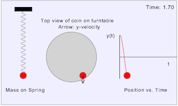

This simulation acts as an introduction to the fundamental concepts of simple harmonic motion. Students are shown a mass on a spring, a coin rotating on a turntable, and a plot of the y-position of both as a function of time (they are the same!).